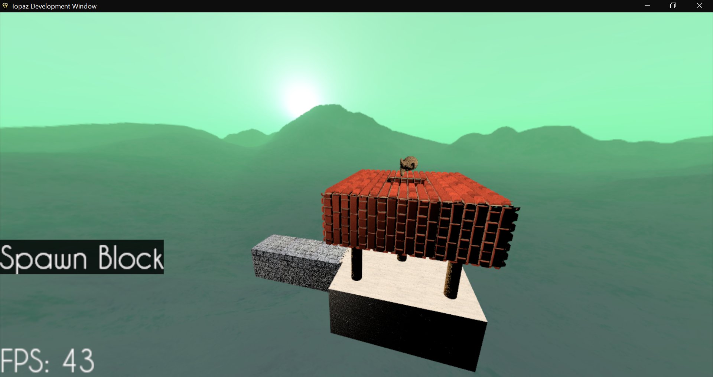

Harry
About me
I'm currently an undergraduate at the University of Nottingham studying Computer Science. I started in 2016 and I expect to graduate in July 2019. I spend most of my free-time programming; mainly on my project, Topaz. As a C++ programmer, I aim to write articulate, yet performant code. Aside from technology, I strongly enjoy political debate, especially among those who I disagree with.
My pleasure comes from building a high-quality product whilst avoiding the bloat that plagues so many commercial products. My ultimate goal is to work freelance as an occupation whilst developing my own projects in my free-time. I would like to gain more experience in scripting languages as a companion to my normally heavy-duty C++ programs, such as Lua, AngelScript.
Projects
Topaz
Topaz (formerly Ocular GEng, Gel or Fizzle) is a comprehensive game engine written in C++. Its features include but are not limited to: Powerful and beautiful 3D graphics, lightweight 2D (gui) rendering, a simple sound-system and basic motion integration. I wrote Topaz for two reasons: As a practical method of learning 3D graphics, and to provide a library for game-programmers, without the bloat of a Unity/Unreal editor and all the software that comes with it.
Topaz is different to a typical game engine in that the entire game implementation is left to the programmer. I believe that engines such as Unity and Unreal abstract away the game technology too much. Complex 3D graphics features (such as a shadow-map or bloom) are readily available, and are completely upto the user to make use of. Because of this (and the fact that Topaz is a library and does not come with an editor), Topaz is NOT targeted towards game-designers, but developers and programmers. Topaz also fanatically adheres to the C++ ISO Standard. This means that the source code for Topaz is very portable, being able to run on all modern platforms that both its dependencies (SDL2 and GLEW) allow.
The primary design choice for Topaz is minimalism. I designed Topaz to the best of my ability without bloat. It uses modern C++, so useful semantics, such as move-semantics are heavily utilised to avoid redundant copies. In addition, I have multiple development logs during the very early stages of development of Topaz, in this youtube playlist.

MDL
MDL stands for Minimalist Data Language. To describe MDL very briefly, I would call it a simplified clone of YAML, yet even more minimalistic. It used to be used for Topaz metadata files. But this was removed when Topaz ceased its use of external metadata.
Since 2018, MDL is archived and not used in any of my projects, as its very sparse set of features is so small that it tends to only be worth using in niché circumstances.
Topazteroids
Topazteroids is a very simple game designed to be a more modern adaptation of Atari's popular arcade game of the same name from the 1970s, aswell as the perfect testing facility for the Topaz engine. This wacky incarnation of Asteroids is 3D.
Asteroids began using a very early version of Topaz (v0.5.1), so modding/forking from it is highly discouraged. Essentially, this project remains here as a reminder of the past, and my journey as a programmer aswell as Topaz's journey from a high-school project to what it is today. It was also a fun way for me to kill half an hour when my internet is down. The image below hints as to what the gameplay looked like.
Contact & Links
Email: harrysjh98@gmail.com
-- linkedin.com -- -- stackoverflow.com -- -- gamedev.net --